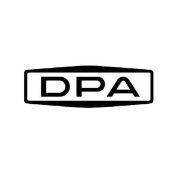

Trade Mark Journal No.2026/007 13 February 2026
UK00004330641 27 January 2026 (7,9,11,12,17,35)

- Class 7
- Jacks [machines]; Steam condensers [parts of machines]; Igniting devices for internal combustion engines; Hand-held tools, other than hand-operated; Engine cooling radiators; Expansion tanks [parts of vehicle cooling radiators]; Air filters for engines; Igniting magnetos; Pumps [parts of machines, engines or motors]; Oil filters; Hydraulic valves; Shock absorbers for machines; Belts for machines; Shaft couplings [machines]; Bearings; Vehicle washing machines.
- Class 9
- Batteries, electric, for vehicles; Accumulators, electric, for vehicles; Theft prevention installations, electric; Locks, electric; Electric wire harnesses for automobiles; Electronic key fobs being remote control apparatus; Vehicle breakdown warning triangles; Thermostats for vehicles; Steering apparatus, automatic, for vehicles; Voltage regulators for vehicles; Navigation apparatus for vehicles [on-board computers]; Automobile data recorder; Sensors; Switches, electric; Coils, electric; Life saving apparatus and equipment.
- Class 11
- Light bulbs; Lights for vehicles; Lights for automobiles; Anti-glare devices for vehicles [lamp fittings]; Light bulbs for directional signals for vehicles; Vehicle headlights; Vehicle reflectors; Lighting installations for vehicles; Cooling installations and machines; Fans [parts of air-conditioning installations]; Fans [air-conditioning]; Air conditioners for vehicles.
- Class 12
- Rearview mirrors; Hoods for vehicle engines; Hub caps; Bumpers for automobiles; Vehicle tires; Direction signals for vehicles; Hubs for vehicle wheels; Windshield wipers; Doors for vehicles; Upholstery for vehicles; Axles for vehicles; Transmission shafts for land vehicles; Driving motors for land vehicles; Transmission chains for land vehicles; Clutches for land vehicles; Connecting rods for land vehicles, other than parts of motors and engines; Vehicle chassis; Brake linings for vehicles; Vehicle bumpers.
- Class 17
- Watertight rings; Draught excluder strips; Shock-absorbing buffers of rubber; Gaskets; Pipe muffs, not of metal; Rubber sleeves for protecting parts of machines; Junctions, not of metal, for pipes; Flexible hoses, not of metal; Insulators; Waterproof packings.
- Class 35
- Advertising; Demonstration of goods; Commercial administration of the licensing of the goods and services of others; Price comparison services; Import-export agency services; Sales promotion for others; Online marketing; Procurement services for others [purchasing goods and services for other businesses]; Promoting the parts of automobile for others.
TANTIVY AUTOMOTIVE CO., LTD.
Representative: IO Insight Ltd